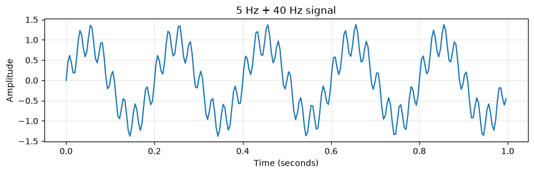
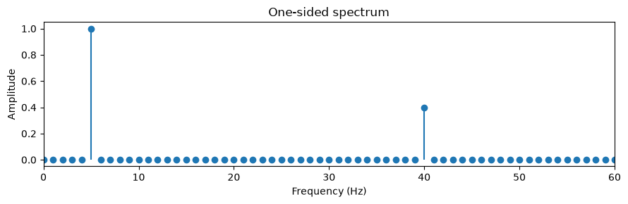
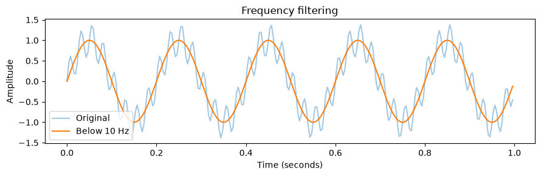

Learn NumPy by doing · Notebook 15
Signals and
the FFT
From time to frequency and back
Expert practice
30–50 minutes
Prerequisites: notebooks 00–14
Notes · 1 Welcome to notebook 15. A sampled signal is just a 1D array of values recorded at evenly spaced times. The fast Fourier transform, np.fft, rewrites that array as a sum of sine waves of different frequencies, which makes it easy to see which frequencies are present and to remove the ones you do not want. The only extra prerequisite is knowing that a sine wave repeats at a frequency measured in cycles per second, or hertz. The notebook imports its own libraries, including matplotlib for the three plots you will see.
What you will learn
Sample, transform, filter
1
Build a signal
Sample two known sine waves at a fixed rate and respect the Nyquist limit.
2
Find the peaks
Use rfft and rfftfreq to see which frequencies are present, and how strong.
3
Filter and rebuild
Zero unwanted frequencies and return to time with irfft.
NumPy course · 15 Signal processing with FFT
2
Notes · 2 The notebook's goal: build a sampled signal, identify frequency peaks, and reconstruct a filtered signal. We work with a signal whose ingredients we already know, a 5 Hz sine plus a weaker 40 Hz sine, so every result can be checked against the truth. That is a useful habit with any new tool: test it on input where you know the right answer before trusting it on real data such as audio, vibration or sensor readings.
Step 1 · Build a signal
A signal is an array of samples
Sample rate fs = 256
256 evenly spaced samples cover one second.
Nyquist limit fs / 2
Above 128 Hz, frequencies cannot be uniquely recovered.
Known ingredients
A 5 Hz sine plus a 40 Hz sine with amplitude 0.4.
import matplotlib.pyplot as plt
sample_rate = 256
time = np.arange(sample_rate) / sample_rate
signal = (np.sin(2 * np.pi * 5 * time)
+ 0.4 * np.sin(2 * np.pi * 40 * time))
fig, ax = plt.subplots(figsize=(9, 3))
ax.plot(time, signal)
plt.show()
assert signal.shape == (256,)
NumPy course · 15 Signal processing with FFT
3
Notes · 3 Sampling records a continuous signal at evenly spaced times. With a sample rate fs of 256 per second, time is 0, 1/256, 2/256 and so on, up to but not including 1 second, so a one-second record contains exactly fs samples without repeating the endpoint; the notebook calls this the endpoint=False idea. The signal is a NumPy expression evaluated on the whole time array at once: a 5 Hz sine plus a 40 Hz sine scaled by 0.4. The Nyquist frequency, fs / 2 = 128 Hz, is the highest frequency this sampling can represent without ambiguity. The plot is on the next slide. Try it: change the 40 Hz amplitude, say to 0.8, and predict the effect: the fast ripple gets taller in the time plot, and its spike in the spectrum grows to 0.8.
Step 1 · The signal in time
A slow wave with a fast ripple

5 Hz
five big cycles
40 Hz
the small ripple
256
samples in 1 s
NumPy course · 15 Signal processing with FFT
4
Notes · 4 This is the plot the notebook draws in Step 1. Count the large swings: five per second, the 5 Hz component with amplitude 1. On top of each swing sits a fast, smaller wiggle: the 40 Hz component with amplitude 0.4, which completes eight cycles for every one of the slow wave. Because the two add, the peaks reach about 1.4. In the time domain the two ingredients are tangled together, and it is hard to read their exact frequencies or strengths from the curve. That is the motivation for the next step: the FFT separates them.
Step 2 · Time into frequency
rfft finds the frequency peaks
spectrum = np.fft.rfft(signal)
frequencies = np.fft.rfftfreq(signal.size,
d=1 / sample_rate)
amplitude = np.abs(spectrum) / signal.size
# Double only bins with negative-frequency partners
amplitude[1:-1] *= 2
peak_indices = np.argsort(amplitude)[-2:][::-1]
print("Peak frequencies:", frequencies[peak_indices])
print("Peak amplitudes:", amplitude[peak_indices])
Peak frequencies: [ 5. 40.]
Peak amplitudes: [1. 0.4]
rfft for real input
Only the nonnegative frequencies, 0 to fs/2.
Bins are fs/N apart
256 / 256 = 1 Hz per bin.
Scale to amplitude
Divide by N, then double the paired bins.
NumPy course · 15 Signal processing with FFT
5
Notes · 5 For a real-valued signal, np.fft.rfft returns one complex coefficient per nonnegative frequency; the negative frequencies would only mirror them. np.fft.rfftfreq gives the frequency of each coefficient when you pass the sample spacing d = 1 / fs, and the spacing between bins is fs / N, here exactly 1 Hz. The magnitude divided by N, with every bin except 0 Hz and the Nyquist bin doubled because each stands for a positive and a negative frequency, recovers the amplitudes of the sines: 1 at 5 Hz and 0.4 at 40 Hz. The record holds whole cycles of both sines, so each lands exactly on one bin. Try it: use 5.5 Hz instead of 5 Hz. Now 5.5 falls between bins, and its energy leaks into nearby bins, so the spike becomes a smaller, wider bump; windowing is the usual remedy.
Step 2 · Two views of one signal
Tangled in time, clear in frequency
np.fft.rfft

5 Hz
amplitude 1.0: the slow wave
40 Hz
amplitude 0.4: the ripple
Every other bin is zero: the spectrum lists exactly the two sines we added, with their strengths.
NumPy course · 15 Signal processing with FFT
6
Notes · 6 These are the notebook's two plots, one above the other. The top one is the signal in time: 256 samples whose two ingredients are mixed together. The bottom one is the same information after rfft, shown as a stem plot from 0 to 60 Hz, where each dot is one 1 Hz bin. Two spikes stand out: height 1.0 at 5 Hz and height 0.4 at 40 Hz, matching the printed peak frequencies and amplitudes. Nothing was lost in the transform; it is a change of viewpoint, and the inverse transform can bring the time view back exactly. Frequency is the natural view when you ask what is in a signal, time is the natural view when you ask what happened when.
Step 3 · Filter and reconstruct
Zero the bins, then invert
Copy, then mask
Bins above 10 Hz become 0; the 5 Hz bin stays.
irfft returns to time
Pass n=signal.size to keep the length, even for odd N.
The asserts pass
Filtered equals the pure 5 Hz sine within atol 1e-12.
filtered_spectrum = spectrum.copy()
filtered_spectrum[frequencies > 10] = 0
filtered = np.fft.irfft(filtered_spectrum,
n=signal.size)
expected = np.sin(2 * np.pi * 5 * time)
np.testing.assert_allclose(filtered, expected,
atol=1e-12)
np.testing.assert_allclose(
np.fft.irfft(spectrum, n=signal.size),
signal, atol=1e-12)
NumPy course · 15 Signal processing with FFT
7
Notes · 7 Filtering in the frequency domain takes three moves. Copy the spectrum so the original stays intact. Use the boolean mask frequencies > 10 to set every coefficient above 10 Hz to zero, which removes the 40 Hz component. Then np.fft.irfft converts the edited spectrum back into samples; passing n=signal.size guarantees the original length, which matters for odd-length signals. The first assert proves the result is the pure 5 Hz sine, and the second proves that the unedited spectrum round-trips to the original signal. This is an ideal cutoff, fine for a learning example; for other signals an abrupt cutoff can cause ringing, and real filter design also considers boundaries and transients. Try it: set the cutoff to 50 Hz. Both 5 Hz and 40 Hz now survive, so irfft recovers the original signal.
Step 3 · Edit frequencies, get time back
Remove 40 Hz, keep 5 Hz
Spectrum after the cutoff
cutoff 10 Hz
0
10
40
60 Hz
5 Hz, 1.0: kept
40 Hz, 0.4: set to 0

np.fft.irfft(filtered_spectrum, n=signal.size)
The orange curve is the smooth 5 Hz sine alone: the ripple is gone, and the length is still 256 samples.
NumPy course · 15 Signal processing with FFT
8
Notes · 8 On the left is the spectrum as the filter sees it. The dashed line marks the 10 Hz cutoff, and everything in the shaded region to its right is set to zero: the 40 Hz spike, drawn dashed, drops to the orange dot on the axis, while the 5 Hz spike, in blue, is untouched. On the right is the notebook's third plot: the inverse transform of that edited spectrum, in orange, over the original signal in faint blue. The ripple has vanished and only the slow wave remains, exactly the pure 5 Hz sine the assert compares against. This works so cleanly because the two components sit on exact bins far apart; with noise or frequencies between bins, the result is approximate.
The idea to remember
One signal,
two views.
The FFT rewrites samples as frequencies. Edit the frequencies, invert, and you are back in time.
Notes · 9 Pause here. A signal can be described by its values over time or by the strength of each frequency it contains, and np.fft moves between the two without losing information. Some questions are easy in one view and hard in the other: which frequencies are present and how strong, or how to remove one of them, are easy in frequency. Remember the practical details: rfft for real input, rfftfreq with d = 1 / fs for the axis, and irfft with n to come back at the right length.
Practice · Exercises
Two exercises with np.fft
Exercise 1
Find the dominant frequency of an 8 Hz wave sampled at 100 Hz
Expected: 8.0. Take the largest magnitude bin and look up its frequency.
dominant_hz = np.fft.rfftfreq(
wave.size, d=1/fs)[
np.abs(np.fft.rfft(wave)).argmax()]
Exercise 2
Round-trip wave through rfft and irfft, keeping its length
Expected: same shape as wave and equal within atol 1e-12.
reconstructed = np.fft.irfft(
np.fft.rfft(wave), n=wave.size)
NumPy course · 15 Signal processing with FFT
10
Notes · 10 Ask the audience to attempt both before revealing the code lines, which match the reference solutions. Exercise 1: the wave has 100 samples at fs = 100, so the bins are 1 Hz apart; find the index of the largest FFT magnitude with argmax, then look up its frequency using the actual sample interval d = 1 / fs. The reference run prints 8.0. Exercise 2: the forward and inverse real transforms round-trip the signal, and n explicitly preserves the original sample count of 100; the reference run prints the 100 reconstructed samples, starting 0, 0.4818, 0.8443, 0.998, which match the original sine.
Practice · Independent challenge
Denoise a sine wave
Challenge
Add seeded Gaussian noise to a sine wave, then compare reconstruction RMSE before and after a frequency cutoff
Explain why an appropriate cutoff depends on the signal.
Before you move on
Explain the main idea without reading the examples
Make both exercise checks print passed
Try a changed input or edge case and explain it
Finish the challenge, or note a question to revisit
NumPy course · 15 Signal processing with FFT
11
Notes · 11 The challenge has no supplied check: decide what you expect first. Create the noise with a seeded generator, for example np.random.default_rng(0).normal(0, 0.3, size), so your results are reproducible. RMSE is the square root of the mean squared difference from the clean sine. Before filtering, the RMSE is roughly the noise level; after zeroing bins above a cutoff just above the sine's frequency, most of the broadband noise is removed and the RMSE should drop, while the sine survives. A cutoff below the sine's frequency would remove the signal itself, and a very high cutoff keeps most of the noise, so the right cutoff depends on where the useful frequencies are. Restart the kernel and run all cells when you finish.
Recap
Sampling
fs samples per second; Nyquist is fs / 2.
rfft
Peaks show which frequencies are present.
rfftfreq
Pass d = 1 / fs; bins are fs / N apart.
irfft
Zero bins, invert with n, get time back.
Up next · Notebook 16
Project: sales analysis
Analyze a month of store sales: cleaning, broadcasting, aggregation and plots.
Notes · 12 Recap the four takeaways, then point to notebook 16, the first capstone project, which combines cleaning, broadcasting, aggregation, plots and business interpretation on a month of store sales. Further reading: the official NumPy documentation for the discrete Fourier transform routines, numpy.fft, at numpy.org/doc/stable/reference/routines.fft.html.